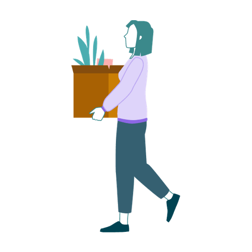

Mit der Academy erhaltet ihr im Business-Plan praxisnahe Lernmodule rund um Facilitation und wirksame Transformation.
Gemeinsam mit 9 Spaces zeigt Plan International Deutschland, wie wertebasiertes Arbeiten Orientierung gibt – nach innen wie nach außen.

Unser fragenbasiertes Einsteiger*innen-Tool hilft euch, euer Büro oder Homeoffice nachhaltiger zu gestalten.
Weniger reden und mehr zuhören: eine Spaziergangsübung zur Anwendung der vier Arten des Zuhörens.
Immer mehr Organisationen erfinden sich neu. Unser Tool bietet dafür eine Struktur und hilft dir, die richtigen Fragen zu stellen und alle Bereiche im Blick zu behalten, die für eine funktionierende Organisation wichtig sind.
Ein Canvas, um herauszufinden, wo ihr in eurem Unternehmen Treibhausgase emittiert